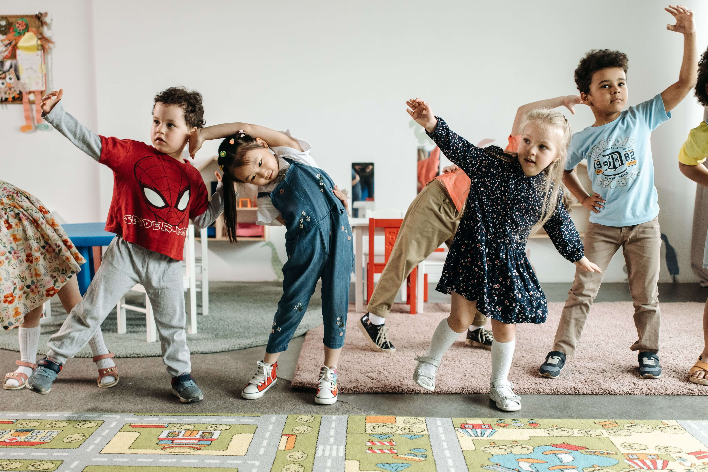

Nāu mai, Haere mai! We want to provide fun ways students, parents, and whānau can encourage kids to stay active. We want to help inspire kids to enjoy being active and develop lifelong habits that support their physical well-being. It all begins somewhere, to start helping children grow happy and strong for their future.
Get moving, have fun, and help tamariki build strong, active bodies!

Why does physical activity matter?
Moving our bodies helps tamariki build strength, coordination, fitness, and confidence while supporting their overall wellbeing. Being active can also help children sleep better, manage their emotions, concentrate when learning, and have more energy throughout the day. From running and playing to dancing, swimming, walking, and playing sport, every type of movement can make a difference.
There are lots of simple ways to help tamariki stay active each day. Try going for a family walk, playing games outside, having a dance session at home, riding bikes, visiting the park, or encouraging active play with friends. You can also turn everyday activities into movement by walking short distances instead of driving or helping with jobs around the house. The most important thing is finding activities that kids enjoy.
Being active isn’t about being the fastest, strongest, or most athletic. It’s about finding ways to move that are enjoyable and making physical activity a regular part of everyday life. Every jump, step, game, and adventure helps tamariki build stronger bodies, happier minds, and healthy habits for the future.
See if you can walk or run 5000-10,000 steps in one day. Eat at least one fruit or vegetable from five different colours this week. Dance to your favourite songs for 15 minutes without stopping. Spend 30 minutes outside playing, exploring, or riding your bike. Invite your whānau to join you for a walk, game of rugby, backyard cricket, or make an obstacle course!